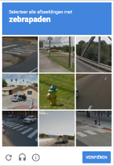
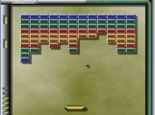

Kunstmatige intelligentie is de laatste jaren goed ontwikkelt, maar hoe kan dit in de toekomst eruit zien? Zijn er dan slimme drones die pakketjes bezorgen naar het juiste adres? Of mantelzorgers in de vorm van robots. En hoe is dat allemaal tot stand gekomen? Technologie-denker Kevin Kelly is ervan overtuigd dat kunstmatige intelligentie overal in zit. Volgens hem zijn we gestart met het stoppen van elektriciteit in dingen. Denk bijvoorbeeld aan een roltrap of een waterkoker. De volgende stap is dat de simpele dingen intelligent worden. Zet je elke dag nadat je op staat een kop thee, dan herkent de waterkoker dat patroon en zet alvast de waterkoker aan.
De technologieën van kunstmatige intelligentie waren er niet zomaar van de een op andere dag.
Er is daarom ook niet zozeer een persoon die kunstmatige intelligentie gecreëerd heeft.
Toch wordt er vaak een onofficiële grondlegger aangewezen. Zijn naam is Alan Turing, een Britse computerwetenschapper, wiskundige, logicus en cryptoanalist.
Alan staat onder andere bekend om zijn paper ‘Computing Machinery and Intelligence’. Hij legt daarin uit of het mogelijk is om een computer en mens te onderscheiden van elkaar.
Komt er al iets bekend voor? De ReCAPTCHA test. 
Vaak moet u deze invullen als u inlogt op een website. Hiermee kan het systeem onderscheiden of u een mens of robot bent.
Sinds 1950 ging kunstmatige intelligentie gelijk op met de ontwikkeling van computers. Hard- en software kunnen gebruikt worden voor de implementatie van kunstmatige intelligentie.
In het jaar 1956 werd kunstmatige intelligentie toegekend aan een nieuw werkveld. Dit gebeurde tijdens de Dartmouth conference georganiseerd door John McCarthy.
In hetzelfde jaar werd een dam-applicatie gemaakt door Arthur Samuel onthuld via de televisie. Op bijna elke computer is er wel een dam- of schaak applicatie te vinden.
Hiermee ontkrachtte hij het idee dat computers niet meer kunnen dan hen verteld wordt. Het programma versloeg namelijk al snel zijn maker.
Het aantal onderzoeken naar kunstmatige intelligentie groeide vanaf dat moment in de Verenigde Staten.
In 1964 werd de eerste intelligente chatbot Eliza geïntroduceerd door Joseph Weizenbaum. Sommige mensen dachten te praten tegen een echt persoon.
Toch slaagde Eliza niet voor de Turing test. Tussen 1970 en 1980 lag de ontwikkeling van kunstmatige intelligentie stil. Het werd de AI winter genoemd.
Computers waren te onderontwikkeld om veel data te verwerken. Daarnaast was er ook een gebrek aan geld. In 1997 schreef IBM’s Deep Blue geschiedenis.
Als eerste machine versloeg het wereldkampioen Kasparov.
Daarna steeg de interesse, investeringen en ontwikkelen.
Hardware werd beter, dat zorgde voor betere software, en dat heeft gezorgd voor meer mogelijkheden bij kunstmatige intelligentie. 
In 2014 won het kunstmatige intelligente systeem van DeepMind het spelletje Breakout. Het algoritme heeft geleerd door middel van trial and error.
Het systeem wist niet eens wat voor spel het was. In 2016 won AlphaGo ook ontwikkelt door DeepMind het spel Go, een strategisch en ingewikkeld bordspel.
Veel experts dachten dat het nog decennia lang zou duren voordat een robot zo’n ingewikkeld spel zou kunnen winnen. Toch werd het tegendeel bewezen.
Nu maken veel Nederlandse KI specialisten zich zorgen over de ontwikkeling van kunstmatige intelligentie in Nederland.
We lopen inmiddels al ver achter ten opzichte van andere landen.
Slimme robots kunnen er erg indrukwekkend uitzien. Maar toch kunnen ze op veel vlakken nog sterk verbeterd worden. Er wordt vaak gedacht dat kunstmatige intelligentie het menselijk brein letterlijk naboots. Maar dat is niet het geval. Kunstmatige intelligentie boots de menselijke intelligentie na. Het menselijk brein is erg ingewikkeld. Toch is het in de toekomst misschien wel mogelijk om het menselijke brein te imiteren.
Daarvoor is veel rekenkracht nodig. Neem een auto van Tesla als voorbeeld. Deze moet in milliseconden reageren op bijvoorbeeld een voetganger of fietser. Hoe meer kracht de computer heeft hoe sneller het berekend kan worden of de auto heel hard de rem moet induwen of geleidelijk het remmen kan opbouwen. Normaal worden deze berekeningen in ons hoofd gedaan en voeren we een handeling uit. Dit proces wordt nu geïmiteerd door middel van software. De ontwikkeling van computers en processorsnelheid spelen daarom ook een rol bij de ontwikkelingen van kunstmatige intelligentie.
De laatste jaren is kunstmatige intelligentie goed doorontwikkeld. Toch zijn er nog veel niet beantwoorde vraagstukken.
Hoe moeten we bijvoorbeeld kunstmatige intelligentie bouwen? De populairste methode is het gebruiken van neurale netwerken.
Computers bouwen het systeem zoals onze hersenen ook zouden werken. Daarnaast zijn er nog twee andere opties.
Evolutionair en zelf-ontwikkelde AI. Ons brein over de eeuwen heen ver ontwikkeld.
Met software en veel rekenkracht kunnen we door ‘trial and error’ de evolutie naar singulariteit versnellen.
Het is te vergelijken met de theorie van Darwin. Laat de fouten ontwikkelingen liggen, en ga verder met de goede ontwikkelingen.
Daarnaast bestaat er ook zelf-ontwikkelden AI. Dit klinkt best eng. Kunstmatige intelligentie die van zichzelf leert en verbeterd.
Zo hebben 2 robots van FaceBook AI haar eigen taal gecreëerd.
Zie dit artikel. FaceBook heeft toegegeven dat ze niet weten waar de 2 robots over aan het praten waren.
Op het moment van schrijven zijn de regels voor kunstmatige intelligentie niet vastgelegd in de wet. Volgens Elon Musk moeten we proactief zijn in het vormgeven van de wetten voor kunstmatige intelligentie. Kunstmatige intelligentie is volgens hem een risico voor ons voortbestaan.
De 3 wetten van Isaac Asimov:
Wet 1: Een robot mag een mens geen letsel toebrengen of door niet te handelen toestaan dat een mens letsel oploopt.
Wet 2: Een robot moet de bevelen uitvoeren die hem door mensen gegeven worden, behalve als die opdrachten in strijd zijn met de eerste wet.
Wet 3: Een robot moet zijn eigen bestaan beschermen, voor zover die bescherming niet in strijd is met de eerste of tweede wet.
Isaac Asimov was een fictie schrijver en heeft deze regels opgesteld voor zijn fictie robots. Toch duiken deze regels vaak op in discussies over kunstmatige intelligentie. De meeste academici nemen de regels met een korreltje zout. Het leidt in de praktijk namelijk tot veel conflicten en problemen. Toch worden de wetten vaak als basis gebruikt in onderzoek naar robotica.
De wetten opgericht door Isaac Asimov zijn meer principes. De ontwikkelaars houden alleen rekening met deze regels. Om de regels vast te leggen in de wet is een lastige taak. Niemand weet immers hoe kunstmatige intelligentie zich in de toekomst gaat ontwikkelen.
Momenteel zijn er geen wetten vastgelegd in Nederland over kunstmatige intelligentie. Dat betekent niet dat er geen regels zijn, zo blijkt uit deze website van de overheid.